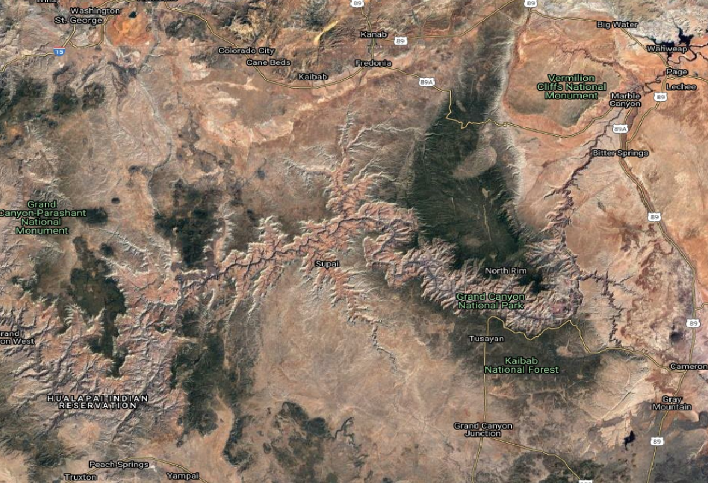

Programmatic Access to OpenTopography’s Cloud Optimized GeoTIFF (COG) Global Datasets¶
Table of Contents
- 1 Authors
- 2 Purpose
- 3 Funding
- 4 Keywords
- 5 Citation
- 6 Setup
- 7 Data Access and Visualization
- 8 Data Processing
- 8.1 Download Colorado River Vector Data
- 8.2 Clip River Data
- 8.3 Buffer River Centerline
- 8.4 Dissolve River Buffer Polygon
- 8.5 Overplot River Shapefiles on DEM
- 8.6 Calculate Projected Bounds of River Polygon
- 8.7 Clip Projected River Polygon
- 8.8 Plot Clipped River Buffer on DEM
- 8.9 Extracting and Masking SRTM Data in One Step
- 9 Conclusion
- 10 Resources
Authors¶
Author1 = {“name”: “Matthew Beckley”, “affiliation”: “UNAVCO, Inc.”, “email”: “beckley@unavco.org”, “orcid”:””}
Author2 = {“name”: “Christopher Crosby”, “affiliation”: “UNAVCO, Inc.”, “email”: “crosby@unavco.org”, “orcid”: “https://orcid.org/0000-0003-2522-4193”}
Author3 = {“name”: “Viswanath Nandigam”, “affiliation”: “San Diego Supercomputer Center, UC San Diego”, “email”: “viswanat@sdsc.edu”, “orcid”: “https://orcid.org/0000-0003-0928-9851”}
Author4 = {“name”: “Minh Phan”, “affiliation”: “San Diego Supercomputer Center, UC San Diego”, “email”: “mnphan@sdsc.edu”,”orcid”:”https://orcid.org/0000-0002-2806-5450”}
Purpose¶
OpenTopography strives to provide a variety of access methods to our datasets to address the varying needs of our users. While most users access data through the web map interface, others prefer to programmatically access data from our cloud-based storage. In this tutorial we will explore a couple of different methods of accessing data over the Grand Canyon from the cloud-based NASA Shuttle Radar Topography Mission (SRTM) catalog in OpenTopography. We will also demonstrate how we can use open-source, command line tools to programmatically access data without the need for a web-map interface.
In addition, this tutorial should highlight the power of Cloud Optimized GeoTIFFs (COGs), and how they can be used to reduce download file sizes as well as increase data access speeds. COGs are quickly becoming a standard format for hosting raster data in the cloud due to its optimized file structure to enable faster access and subsetting. In order to take advantage of this benefit, OpenTopography has recently converted its entire global dataset collection to COGs. With the COG format, programs and web requests can read the top-level header and quickly extract data for a region of interest as opposed to having to read the entire file. This drastically reduces file read-time as well as reducing the number of http GET requests to access the data. For a more detailed discussion on COGs and their benefits see the resources section at the bottom of this page.
Funding¶
OpenTopography is supported by the National Science Foundation under Award Numbers 1948997, 1948994 & 1948857
Keywords¶
keywords=[“COG”, “OpenTopography”, “SRTM”, “GDAL”, “VRT”]
Citation¶
To cite this notebook: Beckley, M., Crosby, C., Nandigam, V. & Phan, M. (2021). Programmatic Access to OpenTopography’s Cloud Optimized GeoTIFF (COG) Global Datasets (Version v1.0). https://doi.org/10.5069/G9BC3WRK Accessed: MM/DD/YYYY
Setup¶
If running this tutorial locally: set up a new conda environment with GDAL 3.2 and AWS CLI tools installed:
# Create a conda environment called, 'COGS', and install GDAL v 3.2: conda create -n COGS -c conda-forge gdal==3.2.0
#Activate your new environment conda activate COGS
#install AWS command line tools in your environment conda install --yes -c conda-forge awscli
We will also be using the following python libraries:
rasterio
fiona
wget
pyproj
geopandas
Within this conda environment, install these libraries with pip:
pip install pip install rasterio fiona wget geopandas pyproj matplotlib
If you are having difficulties getting the environment set up, you can always run the notebook from Binder
Library Imports¶
#Visualization
import rasterio as rio
from rasterio.plot import show
import rasterio.mask
import matplotlib.pyplot as plt
#Working with Shapefiles
import geopandas as gpd
import fiona
#Projections and Transformations
from pyproj import Transformer
#Downloads
import wget
print("Success! Imported all necessary libraries.")
Data Access and Visualization¶
Below is a Google Earth image of a section of the Grand Canyon, AZ where we will extract data and do some data processing:

Access SRTM Tiles with AWS CLI¶
The SRTM catalog in OpenTopography is organized into tiled COGs where each tile is named after its lower left corner (e.g. N35W112.tif is the tile that has its South-West corner at 35 Degrees North, 112 degrees West).
For this exercise we will gather data around the Grand Canyon with a lat/lon bounds of [-114, 35, -111, 37].
Using this Area of Interest (AOI) information we can grab the tiles that cover this region. OpenTopography users can access all hosted data via AWS Command Line Tools. So, knowing the lat/lon bounds of our area of interest, we can download just the tiles for this region using aws command line tools.
It is useful to incorporate wildcards to limit the data you need to download. The example belows downloads all files that match: N35W112.tif, N35W113.tif, N35W114.tif, N36W114.tif, N36W112.tif, & N36W113.tif
Within Jupyter Notebooks, shell commands can be executed by starting the command with an exclamation mark (“!”). In this notebook, we will explore a variety of tools - using both shell and python commands to demonstrate different methods to complete common geoprocessing tasks.
NOTE: The AWS copy command may take up to a minute to complete depending on your internet connection.
print("Downloading files from AWS S3...")
!aws s3 cp s3://raster/SRTM_GL1/SRTM_GL1_srtm/ . --recursive --exclude "*" --include "N3[56]W11[234].tif" --endpoint-url https://opentopography.s3.sdsc.edu --no-sign-request
print("Success! Download complete.")
Plot SRTM Tiles¶
Now that we have downloaded the SRTM tiles that cover the Grand Canyon, we can plot them using the Python Library, Rasterio:
images =['N35W112.tif','N35W113.tif','N35W114.tif','N36W112.tif','N36W113.tif','N36W114.tif']
fig, ax = plt.subplots(figsize=(10,10))
plt.xlim([-114, -111])
plt.ylim([35, 37])
for im in images:
print('loading: ',im)
raster = rio.open(im)
show(raster,ax=ax,cmap='gray')
print("Success! Plotted SRTM Tiles.")
Downloading the data in this manner, we end up with 6 tifs that broadly cover our area. But what if we wanted to confine our search area around the Colorado River, and reduce time spent on post processing of the data? GDAL’s Virtual Raster Datasets (VRT) can help in this regard.
SRTM Bulk Access via GDAL VRTs¶
As part of our ingest process, OpenTopography builds GDAL Virtual Raster Datasets (VRTs) for all its rasters to enable faster and more efficient data access. With GDAL and VRTs, users can extract a specific area of interest and obtain a merged, clipped raster all in one operation. For example, by using the vsicurl command with a targeted bounding box, we can extract a raster that covers the area of the Grand Canyon around the Colorado River.
!time gdal_translate /vsicurl/https://opentopography.s3.sdsc.edu/raster/SRTM_GL1/SRTM_GL1_srtm.vrt -projwin -113.98 36.563 -111.777 35.7 -co\
COMPRESS=deflate srtm_GC.tif
print("Success! Downloaded SRTM from VRT.")
So the above command runs pretty quickly, and if using GDAL version 3.2, which has native COG support, we are able to output a COG-formatted mosaic of SRTM data over our area of interest. Note the ‘-co COMPRESS-deflate’ command additionally compresses the output file using the ‘deflate’ algorithm to reduce the output filesize.
Plot SRTM Mosaic¶
Using the same plotting commands as earlier, we can plot the single, mosaiced image to see that we now have a single image that is clipped to the portion of the Grand Canyon that is of interest.
image ='srtm_GC.tif'
fig, ax = plt.subplots(figsize=(10,10))
plt.xlim([-114, -111])
plt.ylim([35, 37])
print('loading: ',image)
raster = rio.open(image)
show(raster,ax=ax,cmap='gray')
print("Success! Plotted SRTM Mosaic.")
SRTM Access via OpenTopography’s API¶
Users can get the same data product by using OpenTopography’s API. Users can build the REST API call and it will output the appropriate request to use in a curl command, or a http GET request. Here is the URL request that can be used via https for SRTM GL1 data over the GrandCanyon:
https://portal.opentopography.org/API/globaldem?demtype=SRTMGL1&south=35.7&north=36.54&west=-114&east=-111.7&outputFormat=GTiff
Data Processing¶
Download Colorado River Vector Data¶
By using the SRTM VRT, we have now have a single, mosaiced GeoTIFF that is much smaller in size than the original tiled images. But we can take this further by using the power of COGs and other Python libraries. So, let’s say we really only want data around the Colorado River. To do this, we first need to get a vector representation of the Colorado River. Luckily, there is a fantastic site called, Natural Earth Data that has a wealth of vector and raster map data at a variety of scales. For this example, we’ll use the rivers and lakes centerlines file. You can download the data from the Natural Earth Data Download site or you can use wget.
wget.download('https://www.naturalearthdata.com/http//www.naturalearthdata.com/download/10m/physical/ne_10m_rivers_lake_centerlines.zip','rivers.zip')
print("Success! Downloaded river vector data.")
!unzip -o rivers.zip
print("Success! Extracted river shapefiles from archive.")
Clip River Data¶
Now we have river data, but it is for the entire world. Next we’ll clip the river dataset to our area of interest using GDAL’s vector toolkit. We also want to create a buffer around the river, but in order to do that we need to project the data. As downloaded, the river data is in a Geographic Coordinate System, so we will need to output the data in a projected coordinate system in order to do the buffering operation. Arizona is in UTM zone 12N, so we’ll use EPSG:32612 for the output projection. Using the ogr2ogr tool we can output a projected, clipped version of the river shapefile with the following command:
!ogr2ogr ColoradoRiver_AOI.shp ne_10m_rivers_lake_centerlines.shp -t_srs EPSG:32612 -spat -113.98 35.7 -111.777 36.563 -clipsrc spat_extent
print("Success! Clip global river data to Grand Canyon.")
Buffer River Centerline¶
Next we need to create a buffer around the Colorado River. We’ll make a buffer that is 10km around either side so that we include the interesting features of the Grand Canyon. With OGR you can pass in SQLite commands. In this example we will use the ST_Buffer command to create a 10km buffer around the Colorado River.
!ogr2ogr ColoradoRiver_AOI_10kmBuffer.shp ColoradoRiver_AOI.shp -dialect sqlite -sql "select ST_buffer(geometry,10000) as geometry from ColoradoRiver_AOI"
print("Success! Created buffer from river centerline.")
Dissolve River Buffer Polygon¶
Since the river shapefile had segments, we should dissolve the buffer so that we end up with a single dissolved polygon that covers the buffer region of the river. To do this, we can once again use the “ST_Union” command with sqlite:
!ogr2ogr ColoradoRiver_AOI_Buffer_Dissolved.shp ColoradoRiver_AOI_10kmBuffer.shp -dialect sqlite -sql "select ST_Union(geometry) as geometry from ColoradoRiver_AOI_10kmBuffer"
print("Success! Dissolved buffer polygon.")
Overplot River Shapefiles on DEM¶
Using the GeoPandas library, we can easily read in the buffered river shapefile. Note we are plotting in lat/lon space, so we will need to reproject the shapefile coordinates to latitude and longitude. This code shows yet another way of how you could reproject your coordinates - this time using the GeoPandas library:
image ='srtm_GC.tif'
river_buffered = 'ColoradoRiver_AOI_Buffer_Dissolved.shp'
river = 'ColoradoRiver_AOI.shp'
fig, ax = plt.subplots(figsize=(10,10))
plt.xlim([-114, -111])
plt.ylim([35, 37])
print('loading: ',image)
raster = rio.open(image)
show(raster,ax=ax,cmap='gray')
#get the coordinate system of the raster
raster_CRS = raster.crs
#Read in the river centerline shapefile with geopandas
river = gpd.read_file(river)
#Convert the river centerline to the same coordinate system as the DEM (Lat/Lon)
river_LL = river.to_crs(raster_CRS)
#perform the same operations for the buffered river shapefile
river_buffered = gpd.read_file(river_buffered)
river_buffered_LL = river_buffered.to_crs(raster_CRS)
#Overplot the river centerline and the river buffer on the SRTM DEM
river_LL.plot(ax=ax)
river_buffered_LL.plot(ax=ax,alpha=0.4)
print("Success! Plotted river data on SRTM DEM.")
Calculate Projected Bounds of River Polygon¶
Since we buffered the data, it now extends outside our AOI. We can clip it to the bounds, but the buffered shapefile is now in UTM 12N projected coordinates, so we need to find what the bounding box coordinates are in UTM 12N coordinates. There are many different libraries that can perform this operation, but for this step, we’ll highlight using pyproj Python library and OGR to do this tranformation and clipping. First we will get the UTM bounds of our area of interest by converting the lat/lon bounds to UTM coordinates with a simple pyproj script:
#set up the transformation in pyproj
transformer = Transformer.from_crs("epsg:4326", "epsg:32612")
#Convert lower-left corner of AOI
LL_lon,LL_lat = -113.98,35.7
LL_x,LL_y = transformer.transform(LL_lat,LL_lon)
#Convert upper-right corner of AOI
UR_lon,UR_lat = -111.777,36.563
UR_x,UR_y = transformer.transform(UR_lat,UR_lon)
print('Lower Left Corner in UTM X,Y is: {},{}\nUpper Right Corner in UTM X,Y is: {},{}'.format(LL_x,LL_y,UR_x,UR_y))
print("Success! Extracted UTM coordinates for river bounds.")
Clip Projected River Polygon¶
Now we can feed these UTM bounding coordinates back into a ogr to clip the river polygon to the area of interest:
!ogr2ogr ColoradoRiver_AOI_Final.shp ColoradoRiver_AOI_Buffer_Dissolved.shp -clipdst 230367.047752107 3954768.801329 430471.347916117 4046677.17926595
print("Success! Clipped river buffer to area of interest.")
Plot Clipped River Buffer on DEM¶
Now that we have a clipped river buffer, we can plot it, and the river centerline on top of the SRTM DEM to verify that the polygon has been clipped:
image ='srtm_GC.tif'
river = 'ColoradoRiver_AOI.shp'
river_buffered = 'ColoradoRiver_AOI_Final.shp'
fig, ax = plt.subplots(figsize=(10,10))
plt.xlim([-114, -111])
plt.ylim([35, 37])
print('loading: ',image)
raster = rio.open(image)
show(raster,ax=ax,cmap='gray')
raster_CRS = raster.crs
river = gpd.read_file(river)
river_LL = river.to_crs(raster_CRS)
river_buffered = gpd.read_file(river_buffered)
river_buffered_LL = river_buffered.to_crs(raster_CRS)
river_LL.plot(ax=ax)
river_buffered_LL.plot(ax=ax,alpha=0.4)
print("Success! Plotted clipped river data on SRTM DEM..")
Extracting and Masking SRTM Data in One Step¶
Many applications can now take advantage of COGs. Rasterio is a Python library that takes advantage of COGs ability to use the vsis3 and vsicurl file system handlers to perform HTTP read operations in a more efficient way. Ultimately, this benefit is passed on to the user by providing faster downloads that take up less disk space. As an example, we will use Fiona and Rasterio to download only the SRTM data that fits within our 10km Colorado River buffer.
Because we are ultimately going to intersect this boundary with the SRTM VRT, they both need to be in the same coordinate system. So, we need to re-project this final boundary back to Geographic Coordinates so that it is compatible with the SRTM dataset. We can do this with a ogr2ogr command:
!ogr2ogr ColoradoRiver_AOI_Final_WGSLatLon.shp ColoradoRiver_AOI_Final.shp -s_srs "EPSG:32612" -t_srs "EPSG:4326"
print("Success! Reprojected river buffer to WGS84 Lat/Lon")
Now that we have a mask in the same coordinate system as the SRTM VRT, we can read, mask, and plot the data with a few lines of code:
inshp = 'ColoradoRiver_AOI_Final_WGSLatLon.shp'
fp = 'https://opentopography.s3.sdsc.edu/raster/SRTM_GL1/SRTM_GL1_srtm.vrt'
print("Loading Mask...")
#read in the buffered shapefile using fiona
with fiona.open(inshp, "r") as shapefile:
shapes = [feature["geometry"] for feature in shapefile]
#Using rasterio, read directly from the SRTM VRT of COGs, and crop
# data to the buffer polygon
print("Extracting SRTM to mask...")
with rasterio.open(fp) as src:
out_image, out_transform = rasterio.mask.mask(src, shapes, crop=True)
out_meta = src.meta
#set up the output parameters
out_meta.update({"driver": "GTiff",
"height": out_image.shape[1],
"width": out_image.shape[2],
"compress": "LZW",
"tiled":"True",
"blockxsize":"256",
"blockysize":"256",
"transform": out_transform})
#Write out just the SRTM data that is within the buffer polygon
print("Writing out Final SRTM DEM")
with rasterio.open("GrandCanyon_masked.tif", "w", **out_meta) as dest:
dest.write(out_image)
fig, ax = plt.subplots(figsize=(10,10))
plt.xlim([-114, -111])
plt.ylim([35, 37])
print('Plotting: ',"GrandCanyon_masked.tif")
raster = rio.open("GrandCanyon_masked.tif")
show(raster,ax=ax,cmap='gray')
print("Success! Plotted final result")
Using Rasterio with OpenTopography’s VRT of COGs, we are able to download only the portion of the SRTM data we need. In this example, we downloaded only data that is within our 10 km polygon buffer of the portion of Colorado River around the Grand Canyon. Our final output raster is only 12MB, versus the 86MB of tiffs we started with at the beginning!! By putting all these tools together, users can create powerful scripts that automate data access, and ultimately reduce time on data downloads and post-processing.
Conclusion¶
Hopefully this tutorial has been helpful, and has demonstrated alternative methods to accessing cloud-based data. There are often many different ways to accomplish the same task, and we highlighted some of the more common tools and methods to perform some basic geospatial operations. We encourage users to explore datasets hosted at OpenTopography with these powerful tools. OpenTopography has various global datasets that are available through our API and/or bulk access as described in this article:
Resources¶
Check out some of these excellent resources on GDAL, Rasterio, and COGs